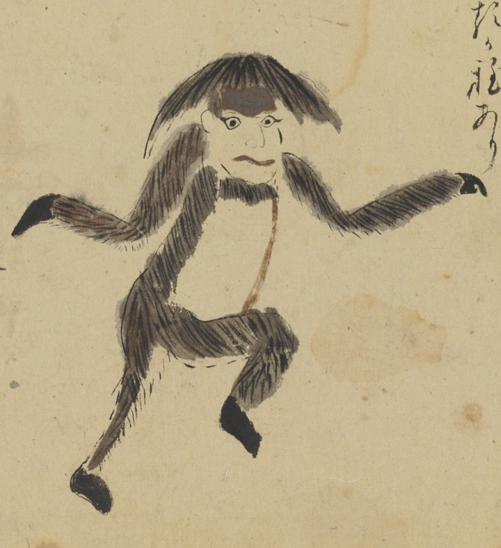

毛長猿；ケナガザル，狨；マタ，猿；サル，獣；ケモノ，動物；ドウブツ，信濃；シナノ

毛長猿、あるいは狨。毛が長い。おかっぱ頭。右足をあげている。
著作者：長岡多門／出典：親書誌：U426_nichibunken_0448：諸国妖怪図巻／日付：2019／資源識別子：U426_nichibunken_0448_0001_0006
Copyright (c)2010- International Research Center for Japanese Studies, Kyoto, Japan. All rights reserved.